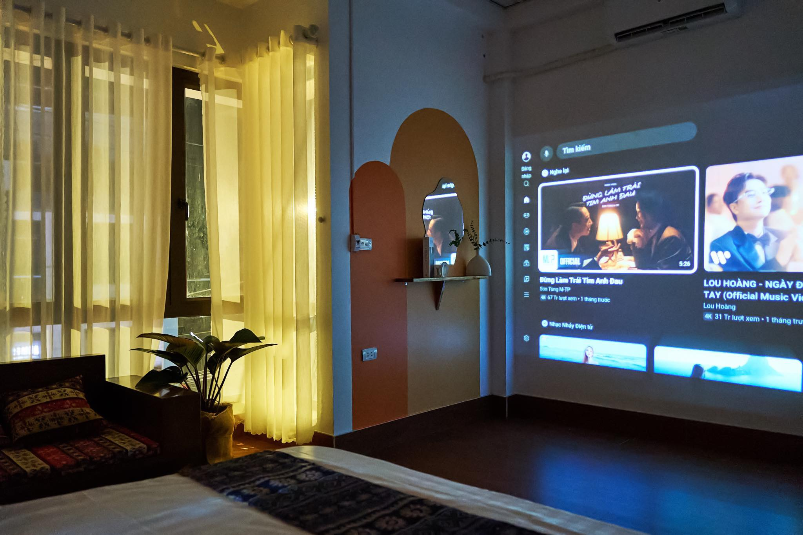

Cao Bằng, Việt Nam
Cao Bằng đã có
Sen lên lịch.
Khỏi lên kế hoạch. Chọn combo, xách balo đi — xe, phòng, lịch trình, quán ăn: Sen lo hết.
Cao Bằng, Việt Nam
Khỏi lên kế hoạch. Chọn combo, xách balo đi — xe, phòng, lịch trình, quán ăn: Sen lo hết.
Sen đã gỡ hết.
Bạn chọn combo. Phần còn lại để Sen lo.
Mỗi combo đã có đủ xe, phòng, lịch trình và quán ăn. Bạn chỉ cần xách balo lên.

Cao Bằng lần đầu: gọn, dễ đi, đủ điểm chính

Đồi Cỏ Cháy, Bản Giốc, Thang Hen, Pác Bó trong 3 ngày
Bạn không cần tự đặt từng thứ. Sen chuẩn bị sẵn.
Xe giường nằm / cabin VIP Hà Nội ⇆ Cao Bằng khứ hồi
Honda Wave Alpha, đầy xăng, mũ + áo mưa + giá đỡ điện thoại
Phòng riêng, điều hoà, nóng lạnh, máy chiếu Netflix
Cẩm nang chuyến đi (Travel Book) chi tiết từng giờ
Hỗ trợ suốt chuyến đi qua Zalo 0822946888
Kế hoạch B khi trời mưa cho từng điểm
Bản đồ tham quan, gợi ý quán ăn, góc chụp đẹp
Một lịch trình riêng cho chuyến đi của bạn.
Ảnh thật từ những chuyến Sen dẫn. Cao Bằng hoang sơ, hùng vĩ, bình dị.
Sen không phải công ty tour. Không phải OTA. Sen sống ở Cao Bằng, thuộc từng con đường, quán ăn, khung giờ đẹp. Mỗi chuyến đi được xếp từ trải nghiệm thật — không copy internet.
Khách hỏi Sen nhiều nhất không phải "chỗ nào đẹp" — mà là "mấy giờ đi thì kịp?". Câu trả lời đó nằm ở những cung đường Sen chạy mỗi tuần.

Vé xe khách khứ hồi, homestay phòng riêng, xe máy Honda Wave (đầy xăng, mũ, áo mưa, giá đỡ điện thoại), Travel Book và hotline hỗ trợ 24/7. Ăn sáng tại homestay có phụ phí; bữa trưa và tối tự chọn — Travel Book gợi ý quán cụ thể với giá tham khảo.
Được. Nhiều bạn đi solo hoặc đi cặp. Lịch trình vẫn dễ theo.
Nhắn Zalo 0822946888. Sen sẽ gợi ý phương án hợp với bạn.
Travel Book có phương án dự phòng cho mỗi hoạt động. Ví dụ: trời mưa ở Bản Giốc → chuyển thời gian xuống chiều, sáng ghé chợ phiên hoặc làng nghề thay thế.
Có. Travel Book là gợi ý tối ưu, không phải bắt buộc. Bạn tự do điều chỉnh — hotline luôn sẵn sàng hỗ trợ.
Chuyển khoản ngân hàng hoặc MoMo. Đặt cọc 50%, thanh toán nốt trước ngày khởi hành 3 ngày.
Hủy trước 7 ngày: hoàn 100%. Trước 3 ngày: hoàn 70%. Dưới 3 ngày: không hoàn. Sen cần confirm với đối tác.
Nhắn Zalo cho Sen — nói ngày đi, số người, và bạn muốn đi mấy ngày. Sen gợi ý lịch phù hợp.
Nhắn Zalo — Đặt lịch Hoặc gọi 0822 946 888Trả lời trong 5 phút · Tư vấn miễn phí